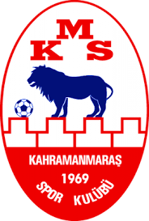

KAHRAMANMARAŞSPOR
Tam ad : Kahramanmaraşspor Kulübü Anonim Şirketi
Takma ad : Akdeniz Aslanları - Edeler
Forma Rengi : Kırmızı-Beyaz
Kuruluş : 21 Şubat 1969 (55 yıl önce)
Stadyum :12 Şubat Stadyumu(Kapasite: 9.216)
Başkan : Türkiye Fatih Mehmet Ceyhan
Teknik direktör : Türkiye
Lig : 3. Lig
Kahramanmaraşspor ya da sponsorluk adıyla Yardımcıoğlu Sigorta Kahramanmaraşspor,
21 Şubat 1969 tarihinde kurulan ve rengini dondurma ve kırmızı biberden alan
kırmızı-beyaz renklere sahip bir spor kulübü.
3. Ligde mücadele etmektedir.
TARİHÇE
Kulüp 21 Şubat 1969 yılında kuruldu. 15 yıl boyunca deplasmanlı amatör bölgesel
kümelerde mücadele etti. 1984 yılında profesyonel hayatına başladı. Amatördeki
son yıllarında önce katılma ligi ikinciliği, arkasından Türkiye amatör futbol
şampiyonluğu kazanan ve Türkiye 2. Futbol Ligine, adım atan Kahramanmaraşspor,
1987-1988 sezonunda yer aldığı 2. Lig B grubunda şampiyon olarak Süper Lig'e
çıkmayı başardı. Ancak yaşanan bazı olumsuzluklar yüzünden tekrar 2. Lig'e
düştü arkasından da 3. Lig'e kadar indi. Uzun yıl 2. Lig'de oynadı ve 2007-2008
sezonunda ligden düştü. Hemen ardından tekrar yükselip
2. Lig'de mücadele eden Muhammed Günkut yönetimindeki Kahramanmaraşspor
maddi krize girerek, 13 futbolcunun şehri terk etmesinin ardından altyapı
futbolcularıyla maçlara çıktı ve ligde tutunamayıp tekrar 3. Lig'e düştü.
Düştüğü sezon futbolculara olan borçlarından dolayı transfer yasağı konan
kırmızı-beyazlı kulüp transfer yapamadan 3. Lig'de tutunmayı başardı.
1 Mayıs 2011 Pazar günü kulüpte yapılan kongrede Kahramanmaraşspor'un
Fatura Vizyon şirketine devredilmesi kararlaştırılarak Sportif A.Ş. olma
yolunda ilk adım atıldı. Borçları üstlenen kulübün yeni sahibi 1,5 yıl
aradan sonra transferler yaparak, kulübü Süper Lig'e taşımayı hedefledi.
24 Mayıs 2012 tarihinde Belediye Bingölspor'u penaltılarla 4-2 yenerek
2. Lig'e yükseldi.2012-13 sezonu itibarıyla kulübün isim sponsoru
Fatura Vizyon olmuştur. Faturavizyon Kahramanmaraşspor olarak yola
çıkan kulübün kırmızı-beyaz renkleri ve logosu değişmemiştir.
2012-13 sezonunda 2. Lig'in bitimine bir hafta kala, deplasmanda oynadığı
Tarsus İdman Yurdu maçını kazanarak, 2. Lig şampiyonluğunu ilan etmiş ve
1. Lig'e yükselmeye hak kazanmıştır.
2013-2014 PTT 1. Lig'in 32. haftasında deplasmanda Denizlispor ile
oynadığı maçı 2 - 1 kaybederek liglerin bitimine 7 hafta kala 1. Lig'e
yükseldiği ilk sezonda 2. Lige düşmesi kesinleşen ilk takım olmuştur.
2014-2015 sezonundan bu yana 2. Ligde mücadele eden Kahramanmaraşspor
2021-2022 sezonu öncesi fikstüre girmesine rağmen ligden çekildi.
Fakat daha sonraki günlerde bu karardan vazgeçti[kaynak belirtilmeli].
2021-22 sezonunu 2. Lig kırmızı grupta geçiren kulüp sezonu 19 puanla
sonuncu tamamlayarak ligin bitimine son 5 hafta kala 3. Lige düştü.
2022-23 sezonu önceliğinde Yardımcıoğlu Sigorta şirketi ile isim
sponsorluğu anlaşması sağlandı.
KADRO
| OYUNCU |
MEVKİİ |
| Emre Tuncel |
Kaleci |
| Selcuk Özcan |
Kaleci |
| Mehmet Ali Ziba |
Kaleci |
| Osman Bodur |
Defans |
| Bilal Hallaclar |
Defans |
| Lider Koç |
Defans |
| Erdi Bakırcı |
Defans |
| Mehmet Fırat Demir |
Defans |
| Cemal İşleyen |
Defans |
| Mert Ilıman |
Defans |
| Fevzi Sığındım |
Defans |
| Evren Kılarcı |
Defans |
| Bayram Çetin |
Defans |
| Ramazan Kahya |
Defans |
| Şamil Bolat |
Defans |
| İsa Baltacı |
Orta Saha |
| Barış Çiçek |
Orta Saha |
| Semih Kazancı |
Orta Saha |
| Emin Altunay |
Orta Saha |
| Evren Horozal |
Orta Saha |
| Erdi Güncan |
Orta Saha |
| Ebubekir Berke Tambay |
Orta Saha |
| Halil Uysal |
Orta Saha |
| Recep Türkoz |
Orta Saha |
| Eren Taşkın |
Orta Saha |
| Yasin Abdioğlu |
Orta Saha |
| Doğanay Kılıç |
Orta Saha |
| Volkan Bekçi |
Orta Saha |
| Erdem Koçal |
Orta Saha |
| Hakan Vural Koçarslan |
Orta Saha |
| Emin Aladağ |
Orta Saha |
| Okan Salmaz |
Orta Saha |
| Burakcan Kunt |
Orta Saha |
| Talha Mayhoş |
Orta Saha |
| Erkan Bükülmez |
Forvet |
| Yakup Ramazan Zorlu |
Forvet |
| Hüseyin Kar |
Forvet |
| Aydın Çetin |
Forvet |